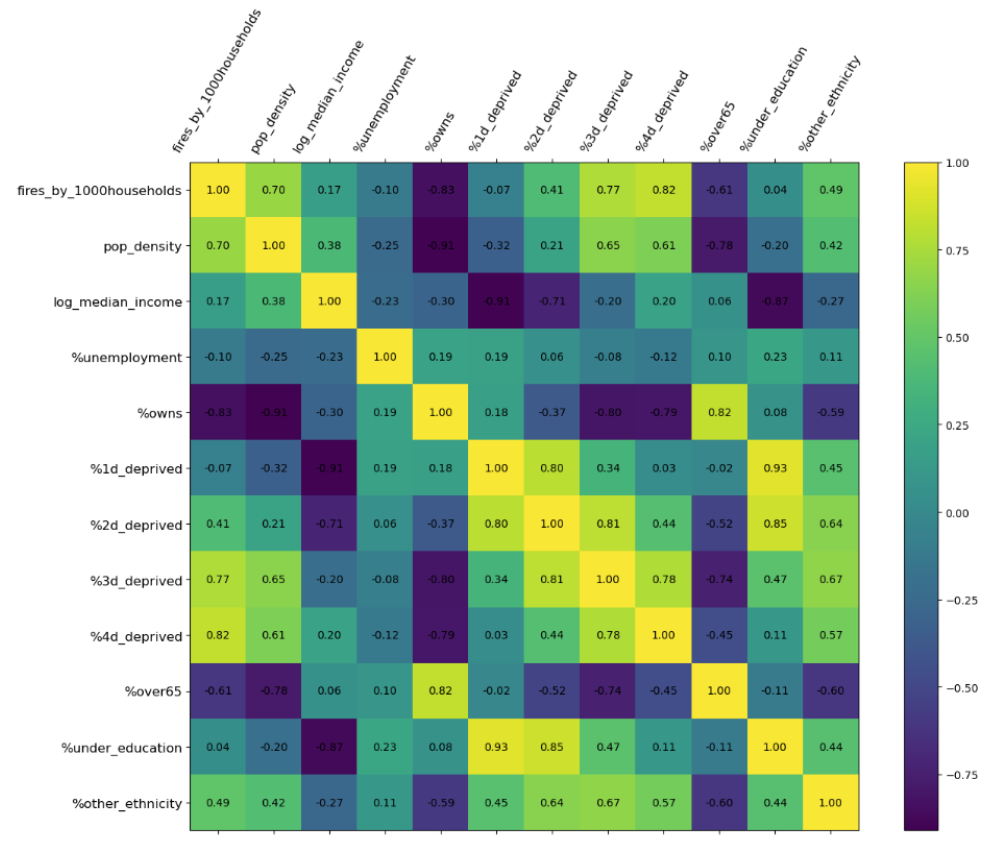
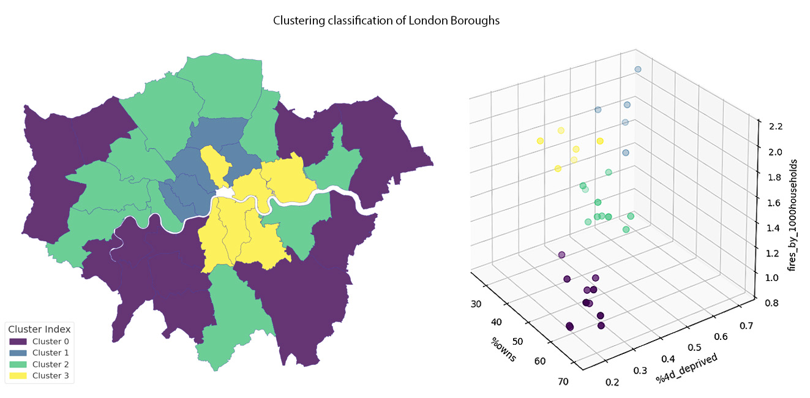
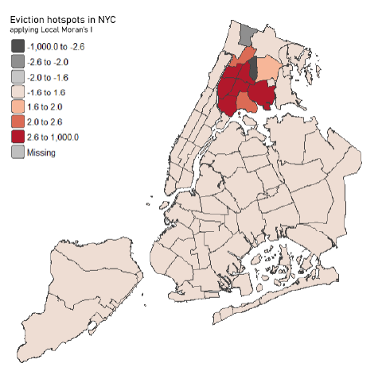
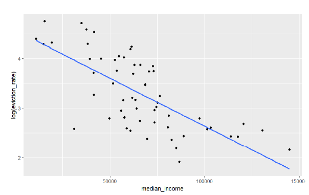
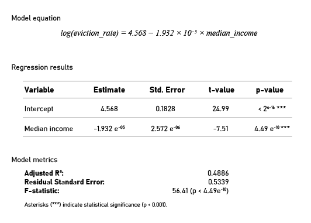
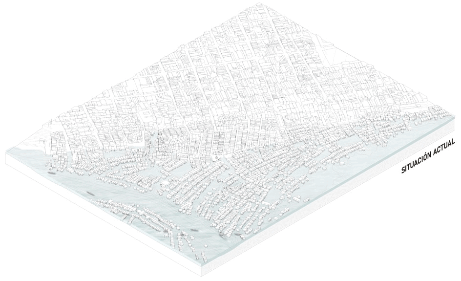
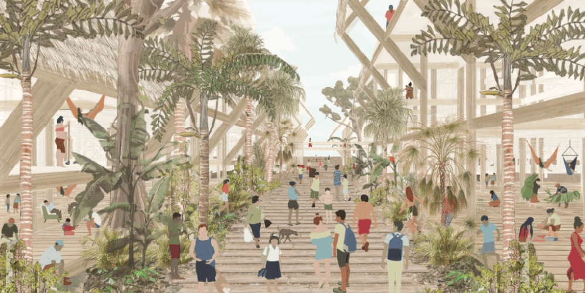

2 Academic Projects
2.1 Assessing the Risks: Cycling Accident Severity in London
This research analyzes the spatial distribution of cycling accidents in London, classifying them by severity. The study employs Kernel Density Estimation (KDE) to visualize high-risk areas and develops a ranking tool to identify the most dangerous intersections for cyclists, aiding in traffic safety prioritization. Additionally, a regression analysis reveals key factors influencing accident severity, highlighting an inverse correlation between severe accidents and rush hour occurrences—suggesting that time of day plays a critical role in accident severity patterns.
2.2 Identification of associations between socio-economic factors and dwelling fires in London in 2021
This research examines the socio-economic variables most strongly linked to dwelling fire risk. The study, through the use of regression identifies ownership status and four-dimensional deprivation as key predictors, highlighting urban inequalities that increase vulnerability in certain communities. The results of the clustering analysis also serve as a valuable tool for guiding localized strategies and policies, ensuring they are tailored to the distinct socio-economic and spatial contexts of each cluster. In general, the findings emphasize that fire risk is a multidimensional issue, requiring mitigation strategies that extend beyond fire safety measures to address underlying socio-econ
- 

2.3 New York City evictions: an spatial and socioeconomic analysis
This analysis explores the relationship between economic deprivation and eviction rates across NYC boroughs, using median income as a key economic indicator. The findings reveal a strong inverse correlation, showing that a $10,000 increase in median income corresponds to a 19.3% decrease in eviction rates. Additionally, spatial analysis highlights significant clustering of high-eviction areas, particularly in the north, including the Bronx, where statistical tests confirm spatial autocorrelation and concentrated eviction hotspots.



2.4 Alternative urban model for Bajo Belen, Iquitos
This research proposes a sustainable and adaptive urban model to address the challenges faced by the flood-prone neighborhood of Bajo Belen, a cultural and economic hub in the Peruvian Amazon. Amid threats of relocation and the loss of territorial identity, the model aims to preserve the essence of Bajo Belen while avoiding current issues such as disconnection, overcrowding, and vulnerability to flooding. The proposal consists of a two-scale intervention: first, a master plan with three key intervention areas—connector, mitigator, and landscape borders—and transversal axes to integrate them; second, an urban and architectural design framework for elements like commerce, roads, housing, communal spaces, docks, and pools, tailored to local techniques, climate, and culture. This intervention demonstrates the potential for a new way of inhabiting the river, preserving social, economic, and environmental connections while ensuring a safe and dignified future for the community.

